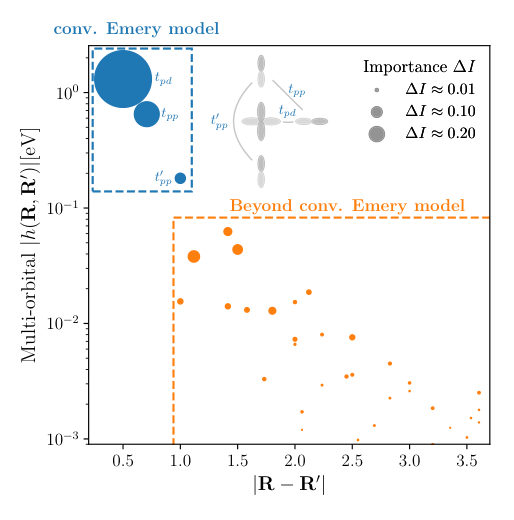
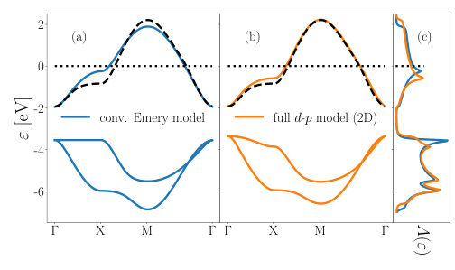
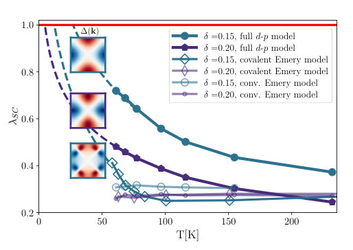

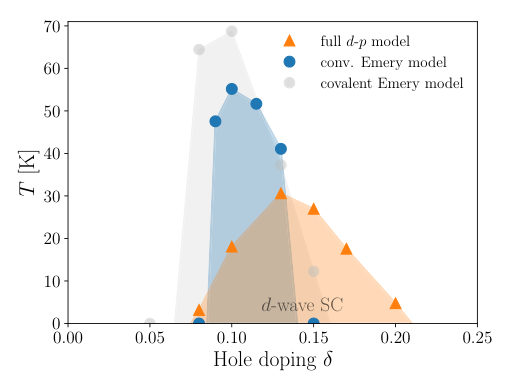
← Index · ← Previous · Next →
Authors: Younghyun Lee, Hakseung Rhee, Unhyeon Kang, Seungmin Oh, Kyungmin Lee, Hyun Jae Jang, Seongsik Park, YeonJoo Jeong, Inho Kim, Jong Keuk Park, Kyung Min Kim, Suyoun Lee
Type: both · Category: disordered systems and neural networks · PDF: https://arxiv.org/pdf/2605.07223v1
Analysis basis: abstract only; PDF text extraction failed or PDF unavailable
Summary. This paper presents a new type of Hopfield network designed specifically for hardware implementation using memristors. By utilizing the natural nonlinearity of memristors, the authors achieve a memory capacity that grows superlinearly with the number of neurons. This provides a scalable and low-power approach for hardware-based generative inference and associative memory.
Why it may be interesting. not directly relevant
Main problem. Classical Hopfield networks suffer from limited memory capacity, while modern Hopfield networks are difficult to implement in hardware due to their complexity and noise vulnerability.
Main result. The introduction of a hardware-aware Hopfield network (HHN) using nonlinear memristors achieves superlinear memory capacity scaling (K ~ 0.3 x N^1.2) and robust pattern reconstruction.
Method. The researchers leverage the intrinsic nonlinear current-voltage characteristics of a charge-trap memristor array to engineer the energy landscape of the network.
Model / system. A 25 x 25 nonlinear memristor array used to implement a hardware-native associative memory architecture.
Key observables. Memory capacity (K/N ratio), pattern reconstruction reliability, and scaling of capacity with neuron number (N).
Important parameters / regimes. Number of neurons (N), synaptic conductance noise, and the nonlinear I-V characteristics of the charge-trap memristor.
Assumptions / limitations. The network operates under a fixed synaptic budget during large-scale simulations.
Paper structure. The paper introduces the HHN concept, demonstrates its implementation using a memristor array, provides experimental evidence of capacity exceeding the classical limit, and presents large-scale simulations on high-dimensional image data.
Associative memory retrieves complete patterns from partial or corrupted inputs and constitutes a primitive form of generative inference. Classical Hopfield networks (CHN) provide a canonical framework for associative memory but suffer from limited memory capacity. Recently, modern Hopfield networks (MHN) were introduced to achieve higher capacity by using explicit pattern-wise storage and neurons with the softmax activation function, which makes the MHN vulnerable to noise and the hardware implementation complicated due to its network size varying with the number of stored patterns. Here, we introduce a hardware-aware Hopfield network (HHN), in which the intrinsic nonlinear current-voltage characteristics of a charge-trap memristor are leveraged to engineer the energy landscape of the HN, increasing the memory capacity. Using a 25 x 25 nonlinear memristor array, we demonstrate reliable reconstruction of corrupted patterns with memory capacity far exceeding the classical limit (K ~ 0.14N, where N is the number of neurons). The HHN preserves Hopfield-type energy-minimization dynamics and remains robust to synaptic conductance noise. Large-scale simulations on high-dimensional image data reveal an empirical memory capacity scaling of K ~ 0.3 x N^1.2 under a fixed synaptic budget. These results establish HHN as a scalable hardware-native architecture for low-power associative memory and generative inference.
Authors: Christopher Moore, Frank Marsiglio
Type: theory · Category: strongly correlated electrons · PDF: https://arxiv.org/pdf/2605.08032v1
Analysis basis: abstract only; PDF text extraction failed or PDF unavailable
Summary. This paper presents an analytical solution to a modified Kronig-Penney model using more realistic truncated harmonic oscillator potentials. It provides a way to derive the tight-binding tunneling amplitude directly from the parameters of the oscillator potential. This offers a more physically grounded bridge between continuous potential models and the tight-binding approximation.
Why it may be interesting. not directly relevant
Main problem. The paper seeks to provide a more realistic analytical alternative to the standard Kronig-Penney model by replacing square well potentials with truncated harmonic oscillator potentials.
Main result. The authors derive analytical expressions for the energy dispersion and wave functions, and establish a direct link between harmonic oscillator parameters and the tunneling amplitude used in the tight-binding approximation.
Method. The authors use an analytical approach to solve the Schrödinger equation for a periodic potential consisting of truncated harmonic oscillator wells.
Model / system. A periodic 1D lattice model where the atomic centers are represented by truncated harmonic oscillator potentials instead of the traditional square wells.
Key observables. Energy dispersion relation and wave functions.
Important parameters / regimes. Harmonic oscillator potential parameters and the resulting tunneling amplitude.
Assumptions / limitations. The potential is assumed to be a periodic array of truncated harmonic oscillators.
Paper structure. The paper introduces the modified Kronig-Penney model, derives the analytical solutions for energy and wave functions, and demonstrates the connection to the tight-binding approximation.
The celebrated Kronig-Penney model traditionally has been formulated with square well potentials representing atomic centres. Here, we use a slightly more realistic potential, the truncated harmonic oscillator, in lieu of square well potentials, and solve the model analytically. We derive the energy dispersion and wave functions for this model. This configuration has some important similarities and differences compared to the usual model. In particular, we write the governing equation in a form suggestive of the tight-binding approximation, as can be done for the usual model. In this way, it is straightforward to derive an expression for the tunneling amplitude used in tight-binding in terms of the harmonic oscillator potential parameters.
Authors: Sana Nakamichi, Ryotaro Kobara, Yoshinari Unozawa, Yoshitaka Kawasugi, Sakura Hiramoto, Koki Funatsu, Toshio Naito, Masafumi Tamura, Reizo Kato, Yutaka Nishio, Naoya Tajima
Type: experiment · Category: strongly correlated electrons · PDF: https://arxiv.org/pdf/2605.07085v1
Analysis basis: full PDF text, analyzed in chunks
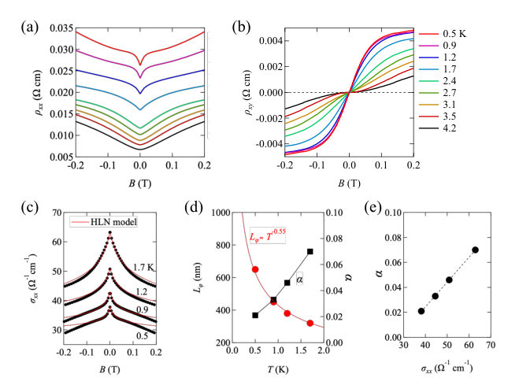
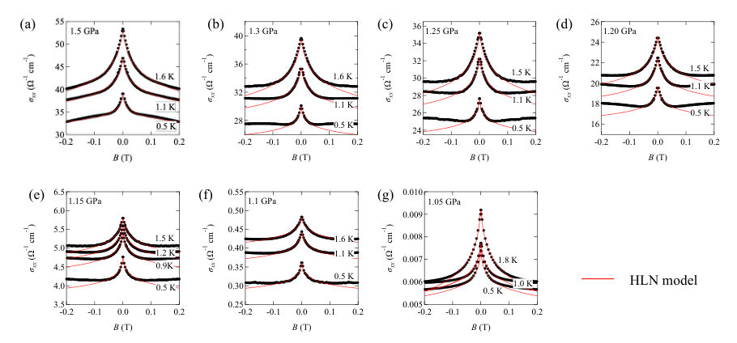
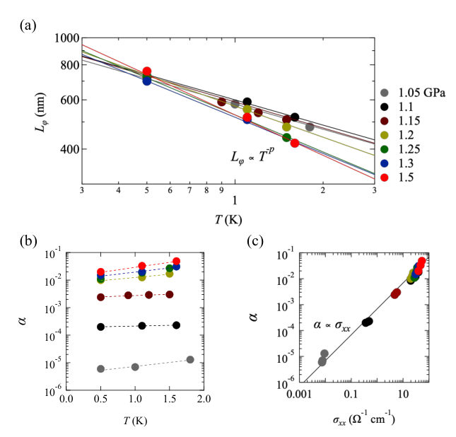
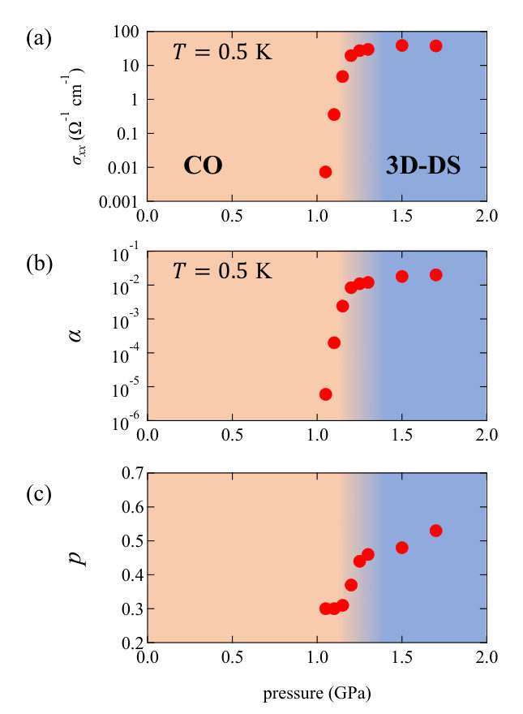
Summary. This paper demonstrates that the temperature dependence of the phase coherence length in a Dirac semimetal changes significantly near a quantum phase transition. This anomalous scaling provides experimental evidence for a quantum-critical regime driven by strong electron correlations. The study highlights the interplay between topology, spin-orbit coupling, and many-body interactions.
Why it may be interesting. not directly relevant
Main problem. The study investigates how a correlation-driven quantum phase transition from a Dirac semimetal to a charge-ordered insulator affects the dephasing dynamics and temperature scaling of the phase coherence length.
Main result. The researchers found an anomalous suppression of the temperature exponent (from p ≈ 0.5 to p ≈ 0.3) near the critical pressure, suggesting a quantum-critical Dirac regime with nontrivial inelastic scattering.
Method. Low-temperature magnetotransport measurements were performed under hydrostatic pressure, using the Hikami-Larkin-Nagaoka (HLN) model to analyze weak antilocalization (WAL) data.
Model / system. The physical system is the organic conductor alpha-(BEDT-TTF)2I3, which acts as a Dirac semimetal under pressure and undergoes a transition to a charge-ordered insulating state.
Key observables. Phase coherence length (Lphi), temperature exponent (p), magnetoconductivity (sigma_xx), and the HLN prefactor (alpha).
Important parameters / regimes. Critical pressure (Pc ~ 1.2 GPa), temperature range (down to 0.5 K), and the spin-orbit energy scale (E_SO).
Assumptions / limitations. The system is treated as a quasi-2D system due to high conductivity anisotropy, and the HLN model is assumed to be applicable for extracting dephasing parameters.
Figures summary. The notes do not provide specific figure descriptions, but they imply figures showing magnetoconductivity cusps, Lphi vs temperature scaling, and the evolution of the exponent p with pressure.
Paper structure. The paper introduces the problem of quantum criticality in Dirac semimetals, describes the experimental setup and pressure-tuning method, presents the extraction of dephasing parameters via HLN fitting, and concludes with a discussion on the implications of the anomalous scaling for the quantum-critical regime.
We have investigated the weak antilocalization (WAL) in the pressurized Dirac semimetal $α$-(BEDT-TTF)$_2$I$_3$ across a correlation-driven quantum phase transition to a charge-ordered insulating state and evaluated the phase coherence length $L_φ$ and its temperature scaling under various pressures from the low-temperature magnetoconductivity. In the high-pressure regime, the system exhibits the conventional two-dimensional dephasing behavior ($L_φ \propto T^{-p}$ with $p \approx 1/2$), characteristic of electron-electron scattering in diffusive conductors. As the pressure approaches the critical pressure ($P_c \sim 1.2$ GPa), the temperature exponent is suppressed to $p \sim 0.3$, while $L_φ$ remains large ($700\text{-}800$ nm at 0.5 K). This anomalous scaling suggests nontrivial inelastic scattering associated with Dirac electrons near the quantum critical point. The persistence of WAL across the transition supports a gapless or nearly gapless quantum phase transition.
Authors: Eric Jacob, M. O. Malcolms, Viktor Christiansson, Leonard M. Verhoff, Paul Worm, Liang Si, Philipp Hansmann, Thomas Schäfer, Karsten Held
Type: theory · Category: strongly correlated electrons · PDF: https://arxiv.org/pdf/2605.07739v1
Analysis basis: full PDF text, analyzed in chunks




Summary. This paper demonstrates that the standard Emery model fails to accurately describe cuprate superconductors because it omits long-range oxygen-oxygen hopping. By including these extended hopping terms via a DFT-derived d-p model, the authors recover a realistic superconducting dome and correct the positioning of the van Hove singularity.
Why it may be interesting. not directly relevant
Main problem. The conventional Emery model is insufficient for a quantitatively correct description of the cuprate superconducting phase diagram and the d-wave order parameter because it neglects crucial long-range hopping elements.
Main result. Including long-range hopping beyond the conventional parameters is necessary to correctly position the van Hove singularity and produce a superconducting dome (7-20% doping) consistent with experimental cuprate physics.
Method. The study uses Density Functional Theory (DFT) with Wannier projection to derive hopping parameters, combined with the Dynamical Vertex Approximation (DGammaA) to calculate superconducting instabilities.
Model / system. The physical system is the cuprate superconductor CaCuO2, modeled using a multi-orbital d-p Hamiltonian involving copper d_{x2-y2} and in-plane oxygen p_x, p_y orbitals with local on-site Coulomb repulsion U.
Key observables. Superconducting eigenvalue (lambda_SC), d-wave order parameter, van Hove singularity position, and single-particle spectral weight.
Important parameters / regimes. Hole doping (delta), charge-transfer energy (Delta_dc), Hubbard U, and various hopping elements (t_pd, t_pp, t'_pp).
Assumptions / limitations. The 2D version of the d-p model neglects hopping in the z-direction; the DGammaA method may potentially exaggerate certain effects due to enhanced k-dependent three-leg vertex contributions.
Figures summary. The figures illustrate the band structure shift and the positioning of the van Hove singularity, as well as a comparison of downfolded one-band parameters between DFT, the conventional Emery model, and the full d-p models.
Paper structure. The paper introduces the failure of the conventional Emery model, presents the DFT-derived Wannier-projected d-p model, compares different models (conventional, covalent, and full d-p) regarding their band structures and superconducting properties, and concludes on the necessity of long-range hopping.
The Emery model is the quintessential model for cuprate superconductors. In his eponymous paper, Emery only considered the next-nearest-neighbor oxygen-copper hopping. Later, also the relevance of nearest- and next-nearest oxygen-oxygen hoppings has been pointed out. Using dynamical vertex approximation, we find a superconducting dome consistent with cuprates. However, long-range hoppings beyond the three conventional hopping parameters are necessary for the quantitatively correct phase diagram and for a proper d-wave order parameter.
Authors: Nisarga Paul, Gil Refael
Type: theory · Category: numerical methods · PDF: https://arxiv.org/pdf/2605.06784v1
Analysis basis: full PDF text, analyzed in chunks
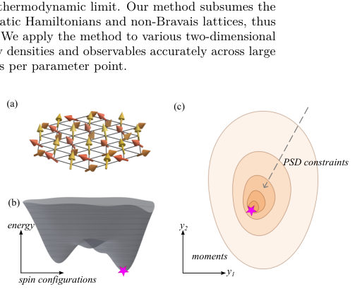
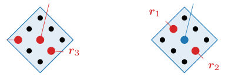
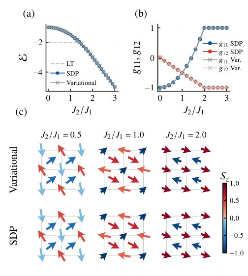
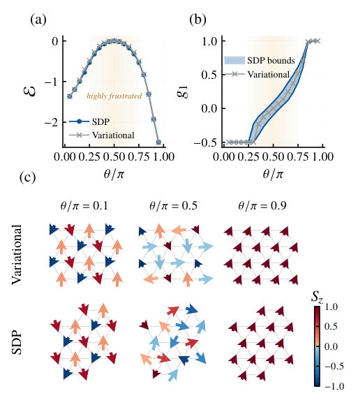
Summary. This paper introduces a new numerical method using semidefinite programming to obtain rigorous, two-sided bounds on the ground state properties of classical frustrated magnets. The method extends beyond the limitations of previous analytical techniques, handling non-Bravais lattices and non-quadratic Hamiltonians. It is mathematically proven to converge to the exact thermodynamic limit.
Why it may be interesting. not directly relevant
Main problem. Finding rigorous, two-sided bounds on the ground state energy density and correlation functions of classical frustrated magnets in the thermodynamic limit, overcoming the NP-hard nature of optimization and the limitations of the Luttinger-Tisza method.
Main result. The authors develop a convergent hierarchy of semidefinite programming (SDP) relaxations that provides rigorous lower and upper bounds on energy and observables, proving that the method converges to the true thermodynamic limit.
Method. An adaptation of the Lasserre hierarchy for polynomial optimization, using a hierarchy of finite-size convex semidefinite programs based on positivity conditions of the moment matrix.
Model / system. Translation-invariant classical spin models on infinite lattices, including Bravais and non-Bravais lattices (e.g., centered-square lattice) and polynomial Hamiltonians like the bilinear-biquadratic model on a triangular lattice.
Key observables. Ground state energy density, spin correlation functions, and spin textures.
Important parameters / regimes. Hierarchy level (r), patch size (P), interaction strengths (J), and lattice geometry.
Assumptions / limitations. The energy density must be a local polynomial, and the Hamiltonian must be translation-invariant.
Figures summary. Figure 1 illustrates the bootstrap approach and the shrinking of optimization regions; Figure 2 shows the lattice patches and moment variables; Figure 3 compares energy bounds and correlations for the centered-square lattice; Figure 4 shows energy bounds and correlations for the BLBQ model.
Paper structure. The paper introduces the SDP bootstrap method, demonstrates its superiority over the Luttinger-Tisza method for non-Bravais and non-quadratic models, provides numerical applications to specific frustrated models, and concludes with a formal mathematical proof of the hierarchy's convergence in the thermodynamic limit.
We introduce a method based on semidefinite programming that produces rigorous two-sided bounds on ground state energy densities and correlation functions of translation-invariant classical spin models on infinite lattices. In this method, the challenge of non-convex optimization on an infinite lattice is replaced with a hierarchy of finite-size convex optimizations arising from positivity conditions that any probability distribution over spin configurations must satisfy. This adapts the Lasserre hierarchy in the theory of polynomial optimization to the context of frustrated magnetism, and we prove convergence of this hierarchy in the thermodynamic limit. Our method subsumes the Luttinger--Tisza method and further applies to non-quadratic Hamiltonians and non-Bravais lattices, thus addressing limitations of prior analytical methods. We apply the method to various two-dimensional frustrated spin models, where it brackets the energy densities and observables accurately across large parameter ranges with typical run times of seconds per parameter point.
Authors: Jun Liu
Type: theory · Category: quantum information and computing · PDF: https://arxiv.org/pdf/2605.07473v1
Analysis basis: abstract only; PDF text extraction failed or PDF unavailable
Summary. The paper introduces a fully connected Quantum Boltzmann Machine that uses bilevel optimization to allow the target Hamiltonian to be learned rather than fixed. This approach significantly improves the accuracy and noise robustness of the QAOA circuit, making it effective even under heavy hardware noise.
Why it may be interesting. This is interesting for researchers in quantum computing as it proposes a way to make variational algorithms like QAOA more powerful and resilient to the high noise levels found in NISQ-era devices.
Main problem. Overcoming the limitations of partially connected Boltzmann machines and standard Quantum Boltzmann Machines (QBMs) by breaking the fixed target Hamiltonian barrier in QAOA-based architectures.
Main result. The proposed fully connected QBM using bilevel optimization achieves high target state measurement probability (0.9559 noiseless) and demonstrates significant robustness against high levels of quantum hardware noise.
Method. A bilevel optimization architecture where the inner loop performs energy minimization via QAOA-like processes and the outer loop performs contrastive divergence learning by optimizing the target Hamiltonian's structural parameters.
Model / system. A fully connected Quantum Boltzmann Machine (QBM) implemented via an extended Quantum Approximate Optimization Algorithm (QAOA) circuit.
Key observables. Probability of measuring the target quantum state, measurement probability of the second-ranked state, and image generation quality (qubit grid).
Important parameters / regimes. Number of QAOA layers (p=1), noise intensity levels, and number of measurement shots (10 shots).
Assumptions / limitations. The study evaluates performance under both noiseless conditions and noise levels representative of current mainstream commercial quantum computing devices.
Paper structure. The paper introduces a new bilevel optimization architecture for QBMs, details the inner and outer loop training processes, and evaluates performance through noise robustness tests and image generation tasks.
To overcome the limitations of classical partially connected Boltzmann machines and mainstream quantum Boltzmann machines (QBMs), this work extends the conventional circuit of the quantum approximate optimization algorithm (QAOA) to a bilevel optimization architecture and proposes a fully connected QBM. The inner-loop training simulates positive phase energy minimization based on the computational process of the conventional QAOA circuit, whereas the outer-loop training simulates negative phase contrastive divergence learning by optimizing the structural parameters of the target Hamiltonian. It is found that, first, the model exhibits superior performance using only a single layer (p=1) in the QAOA circuit, with an average probability of 0.9559 in measuring the target quantum state under noiseless conditions. Second, the model exhibits notable noise robustness. Under the typical noise level of current mainstream commercial quantum computing devices, the average probability of measuring the target quantum state reaches 0.6047; when the noise rises to a more stringent level with doubled intensity, this probability remains at 0.3859. In both scenarios, the target quantum state maintains the highest measurement probability among all detected states, with a value several times higher than that of the second-ranked state. This indicates that the model retains strong robustness even when noise meets or exceeds the upper limit of current mainstream commercial quantum computing devices. Third, under a block-by-block learning strategy with p=1 and only 10 measurement shots, the model consistently generates the target "qubit" grid image regardless of noise interference, demonstrating strong robustness in image generation.
Authors: Florian Egli, Chris Shanks, James Bounds, Jorge Moreno, Muhammad Thariq, Erdem Yilmaz, Theodor W. Hänsch, Thomas Udem, Akira Ozawa
Type: theory · Category: other · PDF: https://arxiv.org/pdf/2605.07942v1
Analysis basis: abstract only; PDF text extraction failed or PDF unavailable
Summary. The paper predicts that increasing the number of ions in a linear chain can restore strong carrier excitation even when photon recoil would normally suppress it. This 'carrier revival' effect allows for efficient excitation of light ions at short wavelengths. These findings have significant implications for improving the performance of multi-ion optical clocks and quantum-logic spectroscopy.
Why it may be interesting. It presents a surprising many-body effect where increasing system size (number of ions) counterintuitively improves the precision/efficiency of a single-particle-like observable (the carrier), which is highly relevant for the development of multi-ion optical clocks.
Main problem. How to maintain strong carrier excitation in trapped-ion chains when photon recoil pushes the system outside the Lamb-Dicke regime.
Main result. The discovery of a counterintuitive revival effect where increasing the number of ions in a linear chain concentrates the motional spectrum back into the carrier, restoring excitation strength.
Method. A quantum-mechanical model of the excitation dynamics in linear ion chains.
Model / system. A linear chain of trapped ions undergoing narrow optical transitions, specifically focusing on the motional spectrum and carrier excitation dynamics.
Key observables. Carrier excitation strength and the distribution of line strength across motional sidebands.
Important parameters / regimes. Number of ions in the chain, Lamb-Dicke regime, photon recoil, and trap secular frequency.
Assumptions / limitations. The study assumes a quantum-mechanical model of excitation dynamics in linear ion chains.
Paper structure. The paper introduces the problem of carrier suppression in the non-Lamb-Dicke regime, presents a quantum-mechanical model for ion chains, predicts the carrier revival effect, and discusses implications for optical clocks and spectroscopy.
For a single trapped ion, the excitation spectrum of a narrow optical transition consists of a Doppler- and recoil-free carrier accompanied by motional sidebands, which are equally spaced by the trap secular frequency and lie under a Doppler-broadened envelope that is shifted by the photon recoil. Outside the Lamb-Dicke regime, the large photon recoil distributes the line strength across many sidebands and suppresses excitation of the carrier. With multiple ions, the motional spectrum becomes dense, and the carrier is further weakened. Here, we predict a counterintuitive revival effect: increasing the number of ions in a linear chain can restore strong carrier excitation even under trapping conditions far from the single-ion Lamb-Dicke regime. Using a quantum-mechanical model of the excitation dynamics in linear ion chains, we find that sufficiently long chains concentrate the spectrum into the carrier. This effect enables efficient excitation of light ions at short wavelengths. It may also benefit multi-ion optical clocks and mixed-species quantum-logic spectroscopy.
Authors: Minjun Jeon, Alexandros Vasilopoulos, Dong-Hee Kim, Víctor Martín-Mayor, Nikolaos G. Fytas
Type: theory · Category: statistical mechanics · PDF: https://arxiv.org/pdf/2605.07867v1
Analysis basis: abstract only; PDF text extraction failed or PDF unavailable
Summary. The paper demonstrates that while cluster Monte Carlo algorithms effectively mitigate critical slowing down in the Blume-Capel model, this advantage disappears at the tricritical point. The loss of efficiency is driven by the correlated percolation of vacancies, which creates a geometric obstruction to nonlocal spin relaxation.
Why it may be interesting. not directly relevant
Main problem. The study investigates whether the efficiency of cluster Monte Carlo algorithms in overcoming critical slowing down is maintained in the presence of vacancies and multicritical fluctuations.
Main result. Cluster acceleration remains efficient along the continuous Ising-like critical line but collapses at the tricritical point, where the dynamic critical exponent reverts to the local-update value due to vacancy percolation.
Method. A systematic dynamic-scaling study using hybrid cluster-local update Monte Carlo schemes.
Model / system. The two-dimensional Blume-Capel model, which features a line of continuous Ising-like transitions terminating at a tricritical point and includes annealed vacancies.
Key observables. Dynamic critical exponent
Important parameters / regimes. Tricritical point, critical line, vacancy percolation, dynamic scaling
Paper structure. The paper introduces the problem of critical slowing down in the presence of vacancies, presents a dynamic-scaling study of the Blume-Capel model, identifies the breakdown of cluster efficiency at the tricritical point, and attributes this breakdown to the geometry of vacancy percolation.
Cluster Monte Carlo algorithms are widely regarded as the most effective route to overcoming critical slowing down in lattice spin systems. Whether this acceleration persists in the presence of vacancies and multicritical fluctuations, however, remains unresolved. We address this question through a systematic dynamic-scaling study of hybrid cluster-local update schemes in the two-dimensional Blume-Capel model, which exhibits a line of continuous Ising-like transitions terminating at a tricritical point. Along the entire critical line, hybrid dynamics retain the near-optimal efficiency of pure cluster updates despite the presence of annealed vacancies. Strikingly, this acceleration collapses precisely at tricriticality, where the dynamic critical exponent reverts to the local-update value. We trace this breakdown to the correlated percolation of vacancies, whose emergent system-spanning geometry obstructs nonlocal relaxation in the spin sector. Our results identify a fundamental geometric limitation of cluster acceleration at tricriticality and establish vacancy percolation as the mechanism controlling dynamic universality in hybrid Monte Carlo dynamics.
Authors: Tiffany Duneau, Colin Krawchuk, Anna Pearson
Type: theory · Category: quantum information and computing · PDF: https://arxiv.org/pdf/2605.07611v1
Analysis basis: abstract only; PDF text extraction failed or PDF unavailable
Summary. This paper proposes a method to train larger quantum machine learning models by building them from smaller, symmetry-protected subcomponents. By using group-invariant loss functions, the authors mitigate the barren plateau problem, allowing quantum graph neural networks to solve the Max-Clique problem more effectively. This approach provides a pathway toward scalable quantum learning models that are difficult to simulate classically.
Why it may be interesting. not directly relevant
Main problem. The difficulty of training parameterized quantum circuits due to the 'barren plateau' problem, where gradients vanish as circuit complexity increases.
Main result. A compositional approach using group-invariant loss functions and permutation-equivariant quantum graph neural networks improves gradient behavior and generalization for the Max-Clique problem.
Method. The authors use a compositional framework to assemble larger models from smaller subcomponents and implement a recursive hybrid quantum-classical heuristic to guide classical search.
Model / system. The study focuses on parameterized quantum circuits (PQCs) and quantum graph neural networks designed for identifying maximal cliques in graphs.
Key observables. Training gradients and inference accuracy for the Max-Clique problem.
Important parameters / regimes. The trade-off between circuit expressivity (trainability) and classical simulability.
Assumptions / limitations. The effectiveness of the approach assumes that symmetry-induced inductive bias via group-invariant loss functions can effectively mitigate barren plateaus.
Paper structure. The paper introduces the barren plateau problem, proposes a compositional framework with group-invariant loss functions, applies this to permutation-equivariant quantum graph neural networks for Max-Clique detection, and concludes with a hybrid quantum-classical recursive optimization heuristic.
Quantum machine learning holds the promise of combining the success of classical machine learning methods with the power of quantum computing, however one of the largest obstacles facing the field is the problem of barren plateaus. Parameterised quantum circuits offer a flexible framework for developing quantum machine learning models, but their practicality is constrained by a trade-off between trainability and classical simulability. In general, circuits that are sufficiently expressive to model complex behaviour often exhibit barren plateaus, where gradients vanish and optimisation fails. In this work we investigate a compositional approach to mitigate this trade-off by assembling larger quantum models from smaller subcomponents. To ensure trainability of these subcomponents, we describe a framework for constructing group-invariant loss functions, which introduce symmetry-induced inductive bias and lead to improved gradient behaviour and generalisation. In particular, we use this framework to design permutation-equivariant quantum graph neural networks for identifying maximal cliques in graphs. The models we construct exhibit superior training gradients through symmetry-induced bias, and our experiments demonstrate that the trained models generalise to larger, more complex problem instances. Finally, inspired by Quantum-Informed Recursive Optimisation Algorithms (arXiv:2308.13607), we implement a recursive hybrid quantum-classical heuristic using the learned quantum models to guide a classical search procedure, demonstrating improved inference accuracy and scalability. Together, these results suggest that compositional circuits could be a viable pathway towards scalable quantum learning models that remain challenging to reproduce classically.
Authors: Jose Falla, Ilya Safro
Type: theory · Category: quantum information and computing · PDF: https://arxiv.org/pdf/2605.06858v1
Analysis basis: abstract only; PDF text extraction failed or PDF unavailable
Summary. This paper introduces a new version of the QAOA algorithm that uses counterdiabatic driving to better handle constraints in portfolio optimization. By adding specific terms to the quantum ansatz, the researchers show that the algorithm can find better solutions more efficiently than standard methods. This is significant for practical applications of quantum computing in finance and optimization.
Why it may be interesting. not directly relevant
Main problem. Improving the performance of the Quantum Approximate Optimization Algorithm (QAOA) for constrained portfolio optimization problems.
Main result. The proposed Constrained Counterdiabatic QAOA (CCD-QAOA) achieves higher approximation ratios compared to standard XY-mixer, Grover-mixer, and penalty-based QAOA formulations at a fixed circuit depth.
Method. The authors implement a counterdiabatic extension of QAOA by incorporating approximate adiabatic gauge potentials derived from nested commutators of the problem and mixer Hamiltonians into the variational ansatz.
Model / system. The study focuses on a constrained portfolio optimization problem modeled using an Ising-type Hamiltonian and a Hamming weight-preserving XY mixer Hamiltonian.
Key observables. approximation ratios
Important parameters / regimes. QAOA depth (p)
Assumptions / limitations. The use of approximate adiabatic gauge potentials via nested commutators.
Paper structure. The paper introduces the CCD-QAOA framework, describes the construction of the counterdiabatic terms using nested commutators, and provides a numerical benchmarking comparison against existing QAOA variants.
We introduce a counterdiabatic (CD) extension of the Quantum Approximate Optimization Algorithm (QAOA) for constrained portfolio optimization. By incorporating approximate adiabatic gauge potentials generated from nested commutators of the Ising-type portfolio problem Hamiltonian and the Hamming weight-preserving XY mixer Hamiltonian into our variational ansatz, the resulting Constrained Counterdiabatic QAOA (CCD-QAOA) achieves improved optimization performance under realistic budget and risk constraints. Benchmarking against standard XY-mixer QAOA, Grover-mixer QAOA, and penalty-based QAOA formulations, our numerical simulations demonstrate that, for a fixed QAOA depth, our CCD-QAOA approach consistently results in better approximation ratios.
Authors: Alessandro Podo, Slava Rychkov
Type: both · Category: statistical mechanics · PDF: https://arxiv.org/pdf/2605.06773v1
Analysis basis: full PDF text, analyzed in chunks
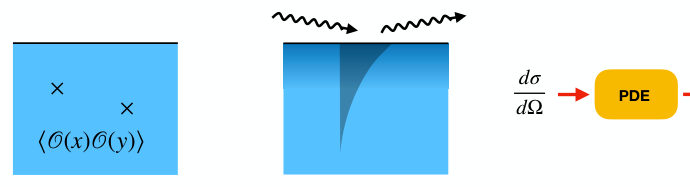
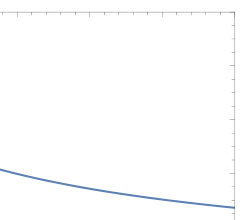
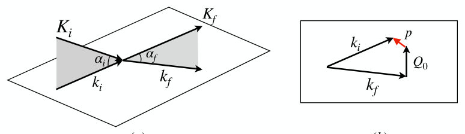
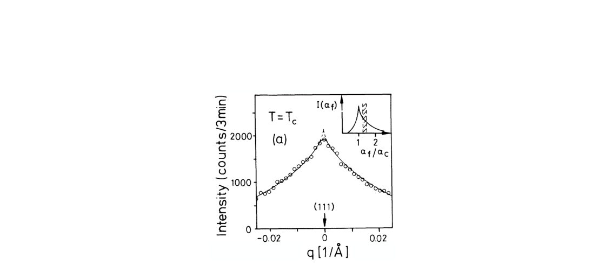
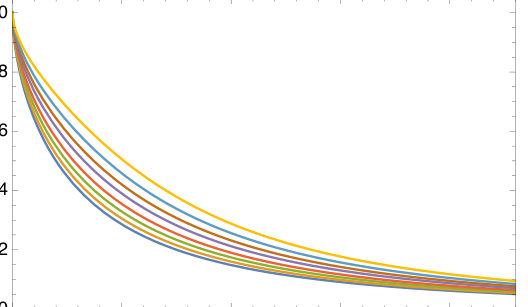
Summary. This paper proposes the first direct experimental method to verify conformal invariance in critical phenomena by using grazing-angle X-ray or neutron scattering. By applying a derived differential operator to the measured scattering cross-section, researchers can check if the symmetry holds. The authors demonstrate the feasibility of this approach through numerical simulations of the 3D Ising model.
Why it may be interesting. not directly relevant
Main problem. The lack of a direct experimental test for conformal invariance in critical phenomena, as existing tests only compare predicted critical exponents rather than verifying the symmetry itself.
Main result. The derivation of a momentum-space conformal Ward identity that acts as a differential operator on the scattering cross-section, providing a concrete protocol for experimental verification.
Method. The authors use Conformal Field Theory (CFT) and Boundary Operator Product Expansion (OPE) to derive a differential constraint, then propose testing this via grazing-angle X-ray or neutron scattering.
Model / system. Critical phenomena in a half-space geometry, specifically focusing on the 3D ordinary Ising transition and its realization in binary alloys or ferromagnetic systems.
Key observables. The scattering cross-section, the theory scattering rate G(p, kappa), and the conformal Ward identity residuals.
Important parameters / regimes. Momentum transfer (p), scattering angle, critical angle (alpha_c), scaling dimension (Delta), and the cross-ratio (xi).
Assumptions / limitations. Assumes the existence of a well-defined boundary, the validity of the CFT description for the chosen system, and the analyticity of the scattering function.
Figures summary. Figure 1 shows the core concept of two-point functions near a boundary and the grazing setup; Figure 2 illustrates boundary and bulk OPE; Figure 4 shows scattering kinematics; Figures 9-10 present numerical validation of the Ward identity showing residuals clustered around zero.
Paper structure. The paper introduces the problem of testing conformal invariance, develops the theoretical framework for boundary CFT in momentum space, derives the specific conformal Ward identity, proposes an experimental protocol using grazing scattering, and provides numerical validation of the proposed test.
We propose a test of conformal invariance in critical phenomena based on the study of a two-point correlation function in the presence of a boundary. This two-point function can be studied using X-ray or neutron scattering in the conditions of total reflection (so-called grazing scattering). The conformal Ward identity in momentum space is here expressed as a differential constraint on the scattering cross-section, as a function of the momentum transfer and the scattering angle. Experimental verification, using e.g. binary alloys, appears well within the existing techniques. This would be the first direct experimental test of conformal invariance in critical phenomena, a symmetry widely assumed but never directly verified.
Authors: Maria H. Visscher, Sebastian Buchberger, Bruno Saika, Shu Mo, Lea Richter, Mats Leandersson, Craig Polley, Andrew P. Mackenzie, Phil D. C. King
Type: experiment · Category: strongly correlated electrons · PDF: https://arxiv.org/pdf/2605.06798v1
Analysis basis: abstract only; PDF text extraction failed or PDF unavailable
Summary. This paper demonstrates a new method to prepare specific crystal surfaces of RuO2 using focused ion beam engineering. This technique allows researchers to clearly distinguish between surface and bulk electronic states, revealing significant Rashba-type spin splitting caused by spin-orbit coupling. This is crucial for accurately understanding the material's potential for unconventional superconductivity.
Why it may be interesting. not directly relevant
Main problem. The electronic structure of rutile RuO2 is difficult to interpret due to its strongly three-dimensional crystal structure and the difficulty in separating bulk states from surface states.
Main result. Using FIB-engineered cleaving, the researchers successfully disentangled surface electronic states from bulk states and identified significant Rashba-type spin splittings in the surface bands due to spin-orbit coupling.
Method. The study uses focused ion beam (FIB)-engineered cleaving to prepare targeted (110) and (100) surfaces, followed by angle-resolved photoemission spectroscopy (ARPES) and comparison with density-functional theory (DFT).
Model / system. The physical system is rutile RuO2, a material of interest for its potential unconventional electronic and magnetic properties and proximity to superconductivity.
Key observables. ARPES spectra, surface electronic states, bulk states, surface resonances, and Rashba-type spin splittings.
Important parameters / regimes. Ru 4d orbitals, spin-orbit coupling strength, and surface termination (110 vs 100).
Paper structure. The paper introduces the challenge of RuO2 electronic structure, describes the FIB-engineered cleaving technique, presents ARPES results for different surfaces, compares findings with DFT, and discusses the implications of spin-orbit coupling and Rashba splitting.
Rutile RuO$_2$ has attracted significant interest due to its putative unconventional electronic and magnetic properties and its proximity to superconductivity. However, the measurement and interpretation of its electronic structure has been complicated by a strongly three-dimensional crystal structure. Here, we demonstrate how the preparation of targeted $(110)$ and $(100)$ surfaces via focused ion beam (FIB)-engineered cleaving allows the acquisition of high-quality measurements of the electronic structure using angle-resolved photoemission spectroscopy. Our results demonstrate that ARPES spectra of RuO$_2$ are, in fact, largely dominated by signatures of distinct surface electronic states. From comparison with density-functional theory, we resolve a surface termination-dependent variation of these, and disentangle them from highly-three-dimensional bulk states and surface resonances. Moreover, we find a marked role of the substantial spin-orbit coupling of the Ru 4$d$ orbitals in the surface region, where a breaking of spatial inversion symmetry leads to significant Rashba-type spin splittings of the surface bands.
Authors: Domagoj Perković, Konstantinos Vasiliou, S. A. Parameswaran, Steven H. Simon
Type: theory · Category: strongly correlated electrons · PDF: https://arxiv.org/pdf/2605.06801v1
Analysis basis: abstract only; PDF text extraction failed or PDF unavailable
Summary. This paper challenges the idea that fractional quantum Hall edges have a protected intrinsic electric dipole moment. By using DMRG, the authors demonstrate that this property is limited to specific cases like the nu=1/3 edge. This finding has significant implications for understanding the edge structure and energetics of FQH states.
Why it may be interesting. not directly relevant
Main problem. The paper investigates whether fractional quantum Hall (FQH) edges possess a protected intrinsic electric dipole moment, challenging previous claims of such a property.
Main result. The authors find that the expected intrinsic dipole value only occurs for the nu=1/3-vacuum edge, while other systems like the nu=2/3-vacuum edge and Pfaffian/anti-Pfaffian interfaces do not exhibit this protected value.
Method. The study employs density matrix renormalization group (DMRG) methods to accurately compute the ground-state dipole and uses composite fermion arguments to explain the lack of protection in hierarchy states.
Model / system. The study focuses on fractional quantum Hall systems, specifically the nu=1/3-vacuum edge, the nu=2/3-vacuum edge, and the interface between Pfaffian and anti-Pfaffian phases.
Key observables. Electric dipole moment at the physical edge of the FQH system.
Important parameters / regimes. Filling factors nu=1/3 and nu=2/3; presence of vacuum or phase interfaces.
Assumptions / limitations. The analysis assumes the validity of the DMRG approach for computing ground-state properties in these specific FQH geometries.
Paper structure. The paper investigates a specific claim, identifies limitations in previous numerical studies, presents new DMRG results for three representative systems, and provides theoretical arguments based on composite fermions.
We investigate the claims by Park and Haldane [Phys. Rev. B 90, 045123 (2014)] of an intrinsic protected value of the electric dipole moment at the physical edge of fractional quantum Hall (FQH) systems. Contrary to prevailing expectations, we find that the edge dipole takes the expected intrinsic value only in certain very special cases. We identify key limitations in earlier numerical studies and employ density matrix renormalization group (DMRG) methods to accurately compute the ground-state dipole. We focus on three representative systems: the $ν=1/3$-vacuum edge, the $ν=2/3$-vacuum edge, and the interface between Pfaffian and anti-Pfaffian phases. We find that the expected intrinsic dipole value occurs only at $ν=1/3$, whereas the other systems do not exhibit the claimed intrinsic value. We give arguments based on composite fermions as to why hierarchy states should generally not have protected intrinsic dipoles. These results have important implications for the energetics and edge structure of FQH states.
Authors: Tariq Leinen, Ola K. Forslund, Eugenio Paris, Nicola Colonna, Marco Caputo, Johan Chang, Gabriel Nagamine, Takashi Tokushima, Conny Såthe, Pascal Puphal, Jeremie Teyssier, Thorsten Schmitt, Nikolay A. Bogdanov, Maria Daghofer, Adrian L. Cavalieri, Flavio Giorgianni
Type: both · Category: strongly correlated electrons · PDF: https://arxiv.org/pdf/2605.07862v1
Analysis basis: full PDF text, analyzed in chunks
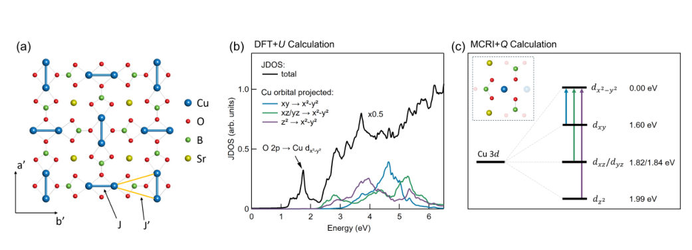
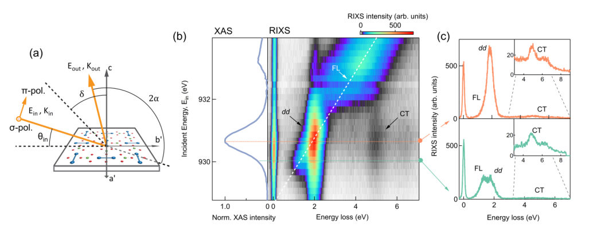
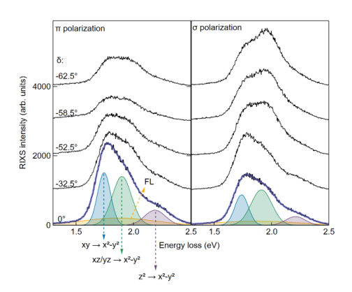
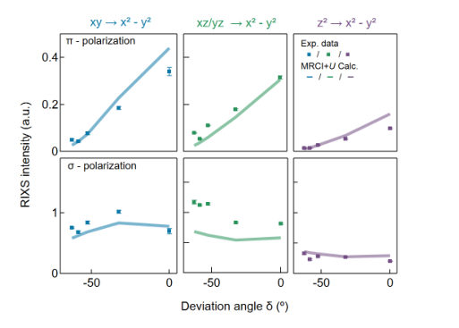

Summary. This paper provides a comprehensive spectroscopic map of the high-energy electronic excitations in the Shastry-Sutherland compound SrCu2(BO3)2. By combining RIXS and optical spectroscopy with advanced quantum chemistry, the authors define the energy scales for d-d and charge-transfer transitions. These findings are essential for refining the magnetic models used to describe frustrated quantum magnetism.
Why it may be interesting. not directly relevant
Main problem. The high-energy electronic excitations, specifically the crystal-field d-d transitions and charge-transfer excitations, in the Shastry-Sutherland compound SrCu2(BO3)2 remain largely unexplored.
Main result. The study establishes the energy scales for d-d excitations (1.8-2.4 eV) and charge-transfer excitations (1.2-1.6 eV and 4.5 eV), providing quantitative benchmarks for computational models.
Method. The researchers combined Cu L3-edge Resonant Inelastic X-ray Scattering (RIXS), broadband optical spectroscopy, and electronic-structure calculations including DFT+U and MRCI+Q.
Model / system. The system is SrCu2(BO3)2 (SCBO), a prototypical 2D quantum antiferromagnet realizing the Shastry-Sutherland model with geometrically frustrated spin dimers.
Key observables. d-d excitation energies, charge-transfer (CT) excitation energy scales, optical conductivity, and RIXS intensity maps.
Important parameters / regimes. Intradimer exchange J approx 75 K, interdimer exchange J' approx 45 K, and Hubbard U = 4 eV.
Assumptions / limitations. The self-absorption correction assumes the photon penetration depth is much larger than the electron escape depth; the absorption anisotropy is small at relevant RIXS energies.
Figures summary. Figure 1 shows the crystal structure of SCBO; Figure 4 compares corrected RIXS intensities to theoretical predictions.
Paper structure. The paper introduces the Shastry-Sutherland system, details the experimental RIXS and optical spectroscopy setup, presents the results for d-d and charge-transfer excitations, compares these to MRCI+Q and DFT+U calculations, and discusses the self-absorption correction framework.
SrCu2(BO3)2 (SCBO) is a paradigmatic realization of the Shastry-Sutherland model, hosting geometrically frustrated spin dimers and a variety of quantum magnetic phases and phenomena. Although its magnetic properties have been extensively studied, the high-energy electronic excitations that determine the crystal-field environment and Cu-O hybridization have remained largely unexplored. Here we combine Cu L3-edge resonant inelastic x-ray scattering (RIXS), broadband optical spectroscopy, and electronic-structure calculations to determine the relevant local and interband excitation energy scales in SCBO. RIXS resolves a well-defined manifold of localized Cu2+ d-d excitations between 1.8 and 2.4 eV, whose energies and polarization dependence are well reproduced by multireference quantum-chemistry calculations. In contrast, optical spectroscopy identifies charge-transfer excitations with an absorption onset near 1.2-1.6 eV and a broader higher-energy structure around 4.5 eV, which are qualitatively captured by DFT+U calculations. Taken together, these results define the characteristic energy scales of d-d and CT excitations, offering quantitative benchmarks for computational frameworks and providing essential input for refining superexchange-based magnetic models of this prototypical frustrated quantum antiferromagnet.
Authors: Amrutha N Madhusuthanan, Madhuparna Karmakar
Type: theory · Category: strongly correlated electrons · PDF: https://arxiv.org/pdf/2605.07656v1
Analysis basis: abstract only; PDF text extraction failed or PDF unavailable
Summary. This paper shows that the unique spin structure of altermagnets can stabilize a pair-density-wave superconducting state without needing external magnetic fields. It identifies specific temperature ranges where this state is robust and provides signatures for experimental detection. This discovery offers a new way to achieve finite-momentum superconductivity in correlated materials.
Why it may be interesting. not directly relevant
Main problem. Investigating whether altermagnetism can provide a field-free mechanism to stabilize finite-momentum superconductivity (pair-density-wave) in two dimensions at finite temperatures.
Main result. The study demonstrates that d-wave altermagnets support a robust pair-density-wave (PDW) phase that persists over a finite temperature window due to momentum-dependent spin splitting.
Method. Non-perturbative static path approximation Monte Carlo approach.
Model / system. A two-dimensional d-wave altermagnet characterized by momentum-dependent spin splitting.
Key observables. Phase coherence, gap closing, pseudogap formation, and spectroscopic and real-space signatures of the PDW state.
Important parameters / regimes. Finite temperature scales, center-of-mass momentum, and spin-splitting magnitude.
Assumptions / limitations. The study uses the static path approximation within a Monte Carlo framework to handle thermal fluctuations.
Paper structure. The paper introduces the concept of altermagnetic-induced PDW, details the Monte Carlo methodology, discusses the thermal scales of phase transitions, and concludes with experimental signatures.
We demonstrate that altermagnetism provides a field-free mechanism for stabilizing finite-momentum superconductivity in two dimensions. Using a non-perturbative static path approximation Monte Carlo approach, we show that a d-wave altermagnet supports a robust pair-density-wave (PDW) phase that persists over a finite temperature window despite strong thermal fluctuations. The underlying mechanism originates from momentum-dependent spin splitting, which effectively enhances pairing instabilities at finite center-of-mass momentum without Zeeman fields. We identify distinct thermal scales associated with phase coherence, gap closing, and pseudogap formation, and establish characteristic spectroscopic and real-space signatures of the PDW state. Our results reveal altermagnetism as a robust route to thermally stable finite-momentum superconductivity and provide experimentally testable signatures for altermagnetic materials.
Authors: Ryota Nakano, Rinsuke Yamada, Oleg I. Utesov, Masaki Gen, Akiko Kikkawa, Hajime Sagayama, Hironori Nakao, Yasujiro Taguchi, Masashi Tokunaga, Taka-hisa Arima, Yoshinori Tokura, Se Kwon Kim, Max Hirschberger
Type: both · Category: strongly correlated electrons · PDF: https://arxiv.org/pdf/2605.07294v1
Analysis basis: full PDF text, analyzed in chunks
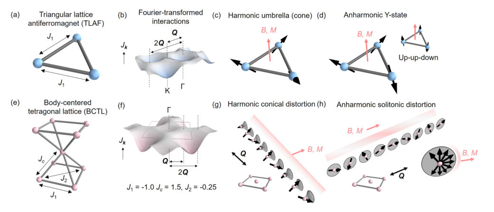
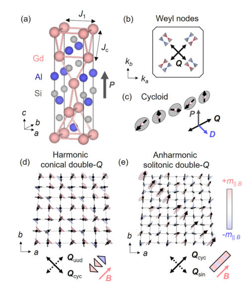
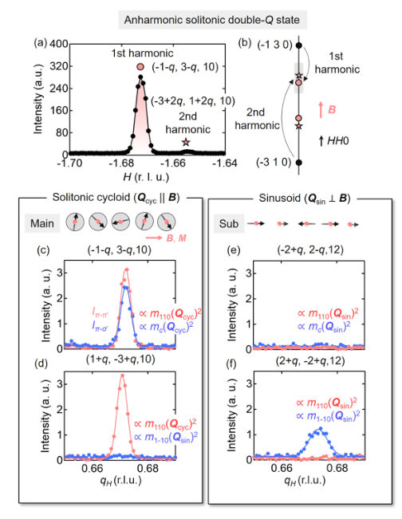
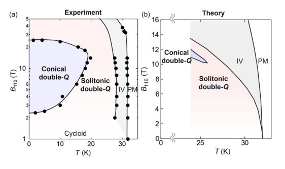
Summary. This paper identifies a new mechanism for magnetic frustration in body-centered tetragonal lattices, specifically in the Weyl semimetal GdAlSi. It shows that near-degenerate exchange interactions allow for a competition between harmonic and anharmonic (solitonic) magnetic textures. This discovery provides a new paradigm for studying complex magnetic phase transitions in non-triangular lattices.
Why it may be interesting. not directly relevant
Main problem. Investigating the competition and frustration between harmonic (conical) and anharmonic (solitonic) magnetic states in a body-centered tetragonal lattice (BCTL).
Main result. The authors demonstrate that GdAlSi realizes a new paradigm of frustration where the near-degeneracy of exchange interactions (J_Q approx J_2Q) allows for a transition between conical and solitonic double-Q magnetic states under an applied field.
Method. The study combines resonant elastic X-ray scattering (REXS) with polarization analysis and magnetization measurements with mean-field theoretical calculations and energy minimization.
Model / system. The physical system is GdAlSi, a magnetic Weyl semimetal with a noncentrosymmetric, body-centered tetragonal lattice. The magnetic model includes competing nearest-neighbor, next-nearest-neighbor, and interlayer exchange interactions, along with Dzyaloshinskii-Moriya and anisotropic exchange interactions.
Key observables. Magnetic ordering vector Q, second-harmonic magnetic diffraction reflections, magnetization (M-H curves), and polarization-dependent scattering intensities.
Important parameters / regimes. Exchange constants (J1, J2, Jc), Dzyaloshinskii-Moriya interaction (DMI) strength, anisotropic exchange interaction (AEI) strength, and applied magnetic field (h).
Assumptions / limitations. The transition between single-Q cycloidal and solitonic states is assumed to be continuous; the demagnetization effect is assumed to be small.
Figures summary. Figure 1 compares TLAF and BCTL frustration models; Figure 2 shows the GdAlSi crystal structure, Weyl nodes, and zero-field cycloid; Figure 3 presents REXS data showing second-harmonic reflections; Figure 4 displays the experimental vs. theoretical magnetic phase diagram.
Paper structure. The paper introduces the concept of BCTL frustration, describes the GdAlSi experimental platform, presents REXS and magnetization results, provides a theoretical mean-field analysis to reproduce the phase diagram, and concludes with the implications for BCTL materials.
The triangular lattice antiferromagnet (TLAF) with nearest-neighbor exchange interaction is a model platform in the field of frustrated magnetism. Here, anharmonic ('up-up-down') and harmonic magnetic states compete, because a helimagnetic wave and its higher harmonic are degenerate in energy. We show that a body-centered tetragonal lattice (BCTL) can realize a similar frustration of harmonic and anharmonic helimagnetic states, and that the tetragonal magnetic Weyl semimetal GdAlSi realizes this scenario. In an applied magnetic field, resonant elastic X-ray scattering reveals a competition of harmonic cycloidal and solitonic double-Q states, well consistent with mean-field calculations. Our work provides a new paradigm for frustration physics in BCTL materials.
Authors: Dipranjan Chatterjee, Paul A. Goddard, Ewan R. P. Thomas, Katharina M. Zoch, Hank C. H. Wu, Benjamin M. Huddart, Cornelius Krellner, Edwin Kermarrec, Mladen Horvatić, Steffen Krämer, Pascal Puphal, John Singleton, Stephen J. Blundell, Fabrice Bert
Type: experiment · Category: strongly correlated electrons · PDF: https://arxiv.org/pdf/2605.08067v1
Analysis basis: abstract only; PDF text extraction failed or PDF unavailable
Summary. This paper investigates the rare 1/9 magnetization plateau in the kagome antiferromagnet Y-kapellasite. Using NMR and pulsed-field magnetization, the authors demonstrate that this plateau represents a gapped fractional state with ordered spins. The findings suggest that the 1/9 state is remarkably robust to different underlying magnetic details.
Why it may be interesting. not directly relevant
Main problem. The microscopic origin of the $1/9$ magnetization plateau in kagome antiferromagnets is unresolved, as this feature is predicted by theory but rarely seen in experiments.
Main result. The study identifies a $1/9$ magnetization plateau in Y-kapellasite characterized by an ordered local spin configuration and a gapped fractional state with suppressed spin fluctuations.
Method. The researchers used pulsed-field magnetization measurements on single crystals and high-field 35Cl NMR spectroscopy.
Model / system. The system is Y-kapellasite (Y3Cu9(OH)19Cl8), an S = 1/2 anisotropic kagome antiferromagnet.
Key observables. Magnetization plateaus (1/3 and 1/9), NMR spectra, magnetic susceptibility, and spin fluctuation dynamics.
Important parameters / regimes. S = 1/2 spin, magnetic field strength (pulsed-field), and the presence of a spin gap.
Paper structure. The paper introduces the problem of the 1/9 plateau, describes the experimental setup using pulsed-field magnetization and NMR on Y-kapellasite, presents the identification of fractional plateaus, and analyzes the spin configuration and gap behavior.
Fractional magnetization plateaus provide a sensitive probe of many-body spin states in frustrated quantum magnets, yet their microscopic origin in kagome antiferromagnets remains unresolved. This is particularly true of the mysterious $1/9$ plateau, which is predicted by theory but infrequently observed in experiment. Here, we investigate this problem in the $S = 1/2$ anisotropic kagome antiferromagnet Y-kapellasite, Y$_3$Cu$_9$(OH)$_{19}$Cl$_8$, using pulsed-field magnetization measurements on single crystals and high-field $^{35}$Cl NMR. We identify a hierarchy of field-induced fractional features, including $1/3$ and $1/9$ plateaus, as well as a weaker low-field feature. Analysis of the NMR spectra and the magnetic susceptibility across the $1/9$ plateau demonstrate that it is accompanied by an ordered local spin configuration, a strong suppression of low-energy spin fluctuations and activated behavior, consistent with a gapped fractional state. These features differ from those in the only other material YCu$_3$(OH)$_6$Br$_2$[Br$_{1-y}$(OH)$_y$] in which this plateau is observed, implying a surprising robustness of the $1/9$ state to the details of the underlying magnetism.
Authors: Chanelle Matadah Manfouo, Donovan Slabbert, Prince Koree Osei, Francesco Petruccione
Type: theory · Category: quantum information and computing · PDF: https://arxiv.org/pdf/2605.07866v1
Analysis basis: abstract only; PDF text extraction failed or PDF unavailable
Summary. This paper investigates hybrid quantum-classical logistic regression for classifying pulsar candidates. It demonstrates that angle encoding at shallow depths can achieve high-quality, well-calibrated probability estimates that are competitive with classical methods.
Why it may be interesting. not directly relevant
Main problem. The paper addresses the need for reliable, well-calibrated probability estimates in the classification of pulsar candidates using hybrid quantum-classical models.
Main result. Angle encoding was found to be the most effective quantum feature encoding, providing the best balance of discrimination and low calibration error at shallow circuit depths, comparable to classical baselines.
Method. The authors evaluate hybrid quantum-classical logistic regression using three encoding techniques (angle, amplitude, and data re-uploading) on the HTRU-2 dataset, utilizing analytic gradients and Murphy decomposition for evaluation.
Model / system. The study uses a hybrid quantum-classical machine learning framework applied to the HTRU-2 dataset, which contains imbalanced pulsar candidate data.
Key observables. Rare-event discrimination, low-false-positive-rate recovery, probability calibration error, and Murphy decomposition metrics (reliability error and resolution).
Important parameters / regimes. Quantum feature encoding types (angle, amplitude, data re-uploading), circuit depth, and training-set size.
Assumptions / limitations. The study assumes that the performance of the quantum models can be meaningfully compared to classical baselines using a paired-seed protocol and notes that simulation runtime is a practical limitation.
Paper structure. The paper compares different quantum feature encodings for logistic regression, evaluates them against classical baselines and a QSVM reference, and analyzes performance using calibration and discrimination metrics across various circuit depths.
Reliable pulsar candidate ranking requires probability estimates that are not only discriminative but also well calibrated. We evaluate hybrid quantum-calssical logistic regression on the imbalanced HTRU-2 dataset using three quantum feature encodings: angle encoding, amplitude encoding, and data re-uploading. The models are trained using analytic gradients and compared with classical baselines and a quantum support vector machine reference model under a paired-seed protocol. Evaluation combines rare-event discrimination, low-false-positive-rate recovery, probability calibration, and runtime analysis. Angle encoding gives the strongest performance among the quantum logistic regression variants. At shallow depth, the angle-encoded model remains close to the best classical baselines in discrimination and low-false-positive-rate recovery, while also giving the lowest calibration error at the benchmark configuration. Murphy decomposition shows that the angle-encoded model maintains low reliability error and high, stable resolution across circuit depths and training-set sizes. This means that its probability estimates preserve both calibration and meaningful separation between candidate groups. Data re-uploading is competitive at small depth but loses discrimination and resolution at larger depth in the present multi-qubit implementation, while amplitude encoding remains weaker across dataset sizes. Shallow angle-encoded quantum logistic regression therefore gives the best balance among the tested quantum logistic models, although simulation runtime remains a practical limitation.
Authors: Stacey Jeffery, Manideep Mamindlapally, Alex Baudoin Nguetsa Tankeu
Type: theory · Category: quantum information and computing · PDF: https://arxiv.org/pdf/2605.07518v1
Analysis basis: full PDF text, analyzed in chunks
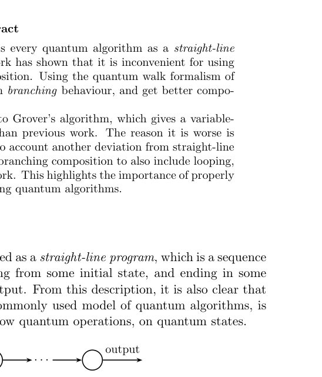
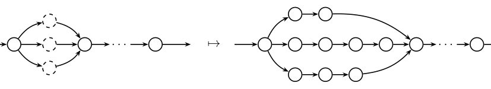

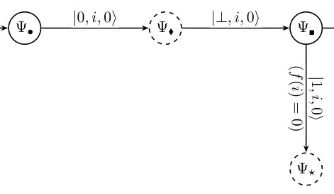
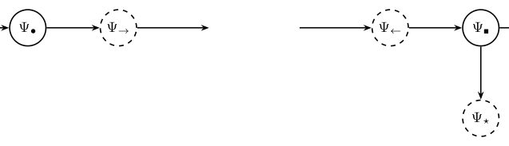
Summary. This paper identifies that treating quantum algorithms as simple sequences of operations (straight-line programs) leads to suboptimal complexity bounds when subroutines have variable runtimes. By proposing a 'loop composition' model that accounts for the iterative nature of algorithms like Grover's, the authors recover the optimal complexity bounds for variable-time quantum search.
Why it may be interesting. not directly relevant
Main problem. The paper addresses the suboptimality of the standard 'straight-line program' model when composing quantum algorithms with variable-time subroutines, specifically in the context of Grover's algorithm.
Main result. The authors introduce a 'loop composition' model that accounts for the looping structure of algorithms, successfully recovering the optimal l2-variable-time search upper bound and matching Ambainis's known bounds.
Method. The authors use a quantum walk formalism, an overlap graph model of subspaces, and Phase Estimation Algorithm (PEA) techniques with positive and negative witness construction to analyze complexity.
Model / system. The study uses a black-box search model where an oracle unitary U_f is implemented via a variable-time subroutine, with the cost of checking each index i being a random variable T_i.
Key observables. The primary observables are the query complexity and the total computational cost (expected running time) of the composed algorithm.
Important parameters / regimes. Key parameters include the number of items N, the variable running times T_i, the number of marked elements mu, and the weights alpha_t and omega_i used in the construction.
Assumptions / limitations. The paper assumes a promise version of the search problem (e.g., a unique marked element), and that the implementation of controlled unitaries is possible within the quantum random access model.
Figures summary. Figure 1 visualizes a straight-line program; Figure 2 shows superposition branching; Figure 3 illustrates the structural difference between straight-line and loop composition via an overlap graph; Figures 4 and 5 show overlap graphs for different subspace configurations.
Paper structure. The paper begins by identifying the failure of the straight-line model in Grover's algorithm, proposes the loop composition framework, develops the mathematical machinery using subspace overlaps and witnesses, and concludes by deriving various complexity bounds across different cost regimes.
The quantum circuit model essentially treats every quantum algorithm as a straight-line program. While this view is universal, recent work has shown that it is inconvenient for using different-length quantum subroutines in superposition. Using the quantum walk formalism of quantum algorithms, it is possible to model such branching behaviour, and get better composition in this setting. We apply the above branching composition to Grover's algorithm, which gives a variable-time quantum search algorithm that is worse than previous work. The reason it is worse is because branching composition does not take into account another deviation from straight-line programs: looping. We show that by modifying branching composition to also include looping, we can get a complexity that matches previous work. This highlights the importance of properly modeling the program control flow when designing quantum algorithms.
Authors: S. K. Gregg, D. G. Green
Type: theory · Category: other · PDF: https://arxiv.org/pdf/2605.06926v1
Analysis basis: abstract only; PDF text extraction failed or PDF unavailable
Summary. This paper uses advanced many-body theory to predict how positrons bind to different five-membered heterocyclic molecules. It reveals that the type of atom in the ring significantly dictates where the positron settles, following a specific preference order. The study highlights the importance of molecular structure, such as aromaticity, in determining binding strength.
Why it may be interesting. It provides high-level many-body insights into positron-molecule interactions and the formation of virtual positronium, which is relevant to molecular physics and particle-atom interactions.
Main problem. Predicting the positron binding energies and Dyson orbitals in five-membered heterocycles containing various substituents.
Main result. The study identifies a preference order for positron localization (N, S, O, then NH) and shows that binding is influenced by aromaticity and pi-bond presence.
Method. Ab initio many-body theory using the GW@BSE level, including electron-positron ladder series for virtual positronium formation, implemented in the EXCITON+ code.
Model / system. Five-membered heterocyclic molecules with N, O, S, and NH substituents.
Key observables. Positron binding energies and Dyson orbitals.
Important parameters / regimes. Substituent types (N, O, S, NH), molecular aromaticity, and presence of double pi bonds.
Assumptions / limitations. The calculations rely on the GW@BSE approximation and the inclusion of infinite electron-positron and positron-hole ladder series.
Paper structure. The paper presents an ab initio calculation of positron binding energies, details the many-body theoretical framework (GW@BSE and ladder series), analyzes the effect of different chemical substituents, and discusses the spatial localization of the positron via Dyson orbitals.
Positron binding energies and Dyson orbitals for five-membered heterocycles with N, O, S and NH substituents are predicted \emph{ab initio} via many-body theory. The positron-molecule correlation potential (self energy) is calculated via solution of Bethe-Salpeter equations that describe the positron-induced polarization of the target and screening of the electron-positron Coulomb interaction at the $GW$@BSE level, the infinite electron-positron ladder series that describes the crucially important process of virtual positronium formation, and the analogous positron-hole ladder series. The all-order calculations employ Gaussian-orbital bases and are implemented in the {\tt EXCITON+} code. The effect of substituting combinations of N, O and S atoms, and the NH group in the molecule's ring is studied, and the role of individual molecular orbitals, many of which are found to significantly contribute to the correlation potential, quantified. Analysis of the positron bound-state Dyson orbitals shows that the positron is typically localized next to one or two of the substituents in the ring, with the order of preference N, S, O, then NH, and is also influenced by aromaticity and the presence of double ($π$) bonds in the ring.
← Index · ← Previous · Next →